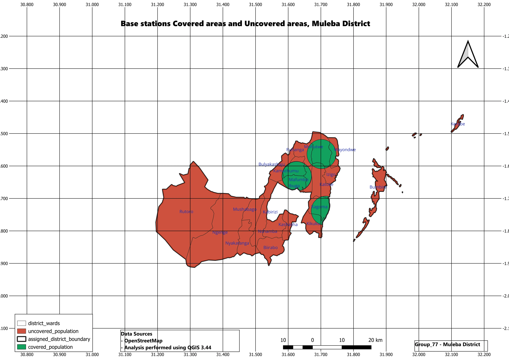

Telecom Base Station Site Selection (Muleba District)
A rigorous geospatial analysis solution designed to identify optimal, high-ROI locations for new cellular base stations in Muleba District, maximizing network coverage while minimizing infrastructure costs.




The Business Challenge
Expanding telecommunication infrastructure into rural and semi-urban districts like Muleba comes with unique geographic and financial complexities. Previously, site selection relied heavily on preliminary visual surveys and basic estimates.
This traditional approach resulted in critical operational challenges: high risks of poor signal propagation due to unexpected terrain obstructions, extended planning timelines, expensive land acquisition in sub-optimal areas, and failure to effectively capture high-density subscriber clusters. The telecommunications provider needed a data-driven spatial strategy.
Our Solution & Features
MLUE Technology deployed an advanced Location Intelligence framework leveraging GIS modeling. By integrating spatial datasets—including Digital Elevation Models (DEM), demographic distributions, existing road networks, and power grids—we built a comprehensive multi-criteria decision analysis (MCDA) tool specifically tuned for Muleba District's topography.
Suitability Analysis
Advanced algorithmic scoring of land parcels based on accessibility, proximity to power infrastructure, and zoning constraints.
Buffer & Coverage Modeling
Spatial buffers calculating line-of-sight propagation to measure exact signal reach and eliminate overlapping tower footprints.
Accessibility Mapping
Route analysis identifying the easiest paths for heavy construction equipment transport to proposed remote tower sites.
Demand-Driven Ranking
Overlaying demographic data to prioritize deployment in zones with high subscriber potential and heavy data traffic needs.
Technologies Used
Industry-standard GIS engines and spatial databases optimized for high-performance spatial queries.
Business Impact
The spatial modeling framework transformed the client's network planning strategy from guesswork into a precise science, delivering clear measurable value:
- Reduced preliminary site survey and planning duration by over 50%.
- Optimized tower placement, increasing regional population coverage by 35% with fewer base stations.
- Mitigated financial risks by avoiding unstable terrain and difficult land acquisition zones.
- Enabled faster, data-backed decision-making for executive expansion strategies.
Need a Similar Solution?
Let's build location intelligence solutions that optimize your operations and drive strategic expansion.
Contact MLUE Technology